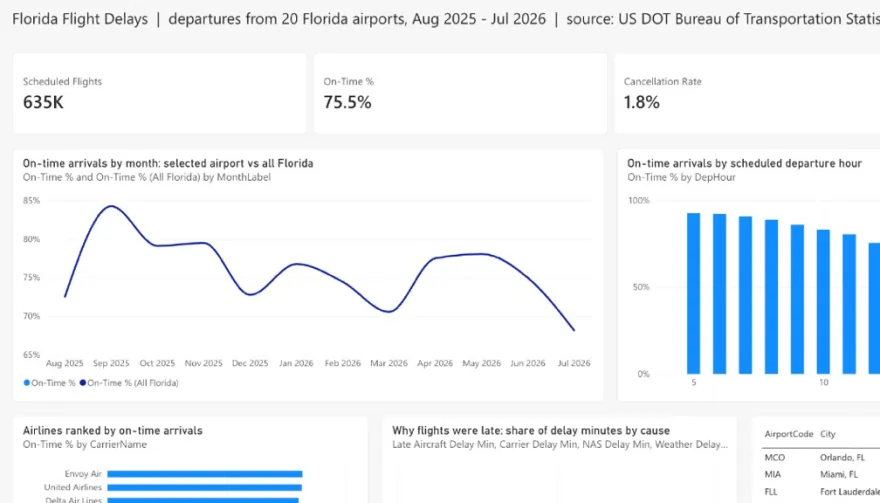
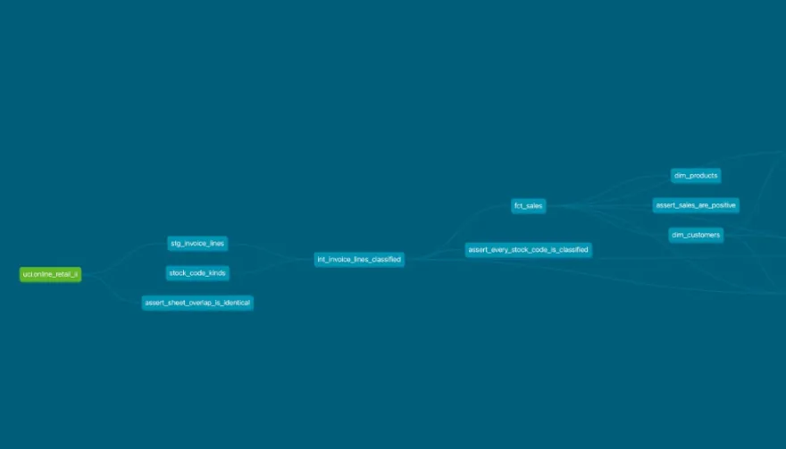
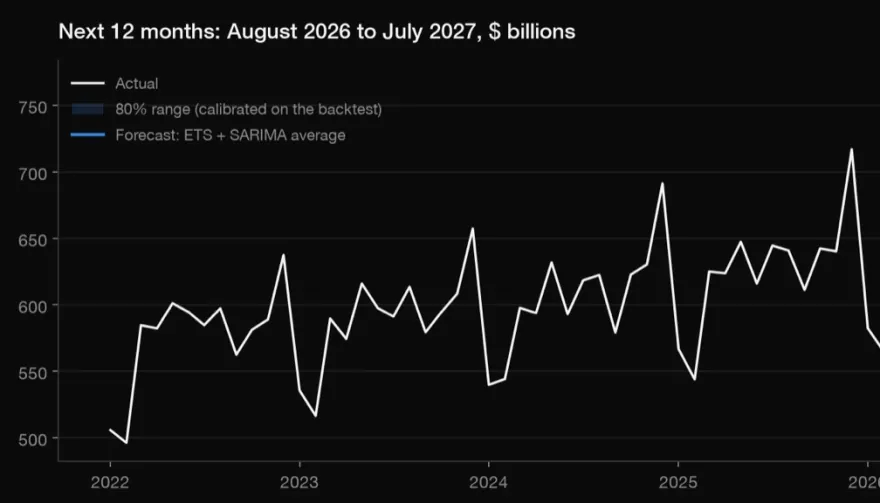
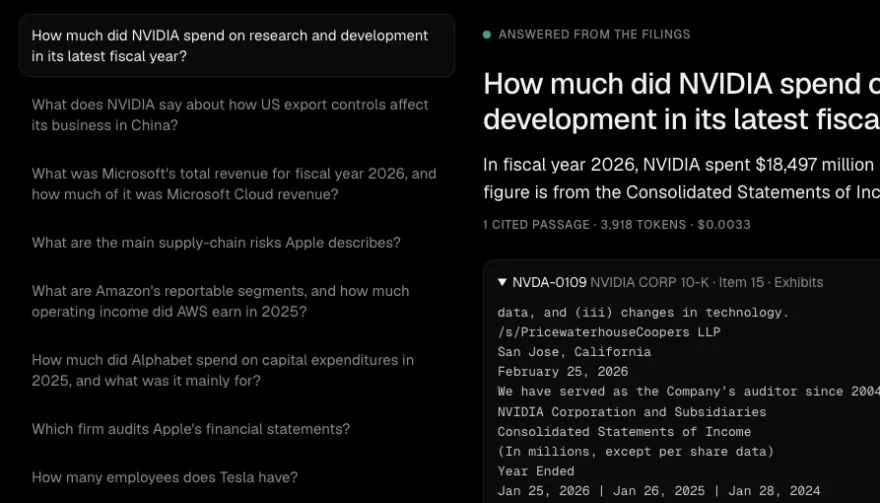

Every number, checked against its source.
224 case studies. 219 public repositories. Data analyst in Tampa: SQL, Python, Power BI, dbt, forecasting, retrieval.
75.5%
On time
Florida Flight Delays
Time of day matters about twice as much as the airline; late-arriving aircraft cause 42.5% of delay minutes.
635,459 flights, Aug 2025 to Jul 2026

31of 31
Tests pass
Retail Pipeline in dbt
Net sales £18.18M after £1.46M of cancellations; champions are 25.1% of customers and 70.8% of revenue.
1.07M invoice lines

1.81%
Backtested
US Retail Sales Forecast
The ETS + SARIMA average had 35% smaller backtest errors than 'same month last year'.
rolling origin, 14 origins x 12 months

20of 20
Verified
Ask the 10-K
Every money answer landed within 0.5% of XBRL with the figure in the cited passage; $0.10 for all 30 questions.
5 of 5 refusals when the answer is absent

Analyst first.
Hands-on SQL and Python, trained at USF's Muma College of Business. Microsoft Power BI Data Analyst Associate. Research Assistant at the USF REACH Lab; Ticketing Operations at USF Athletics; Business Analyst at TraceRT, where new Power BI dashboards cut report turnaround by 22%.
All of it.
language, kind, year, commits, live, or any word in a title or tool
Let's talk.
rishit.mathur@yahoo.comOpen to entry-level data and business analyst roles, US-wide and remote.